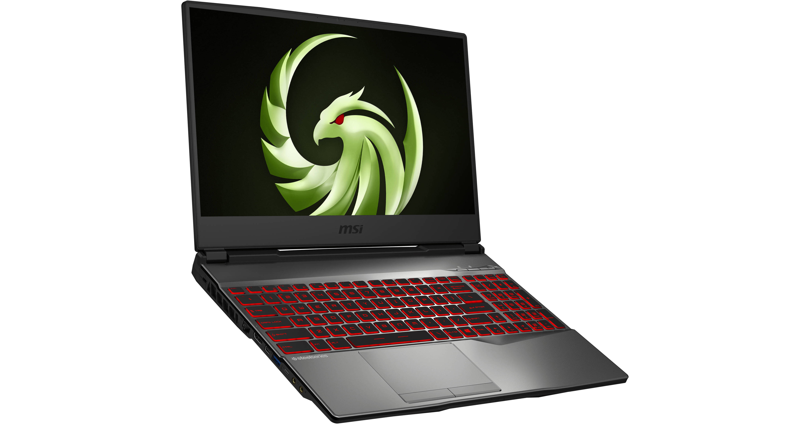
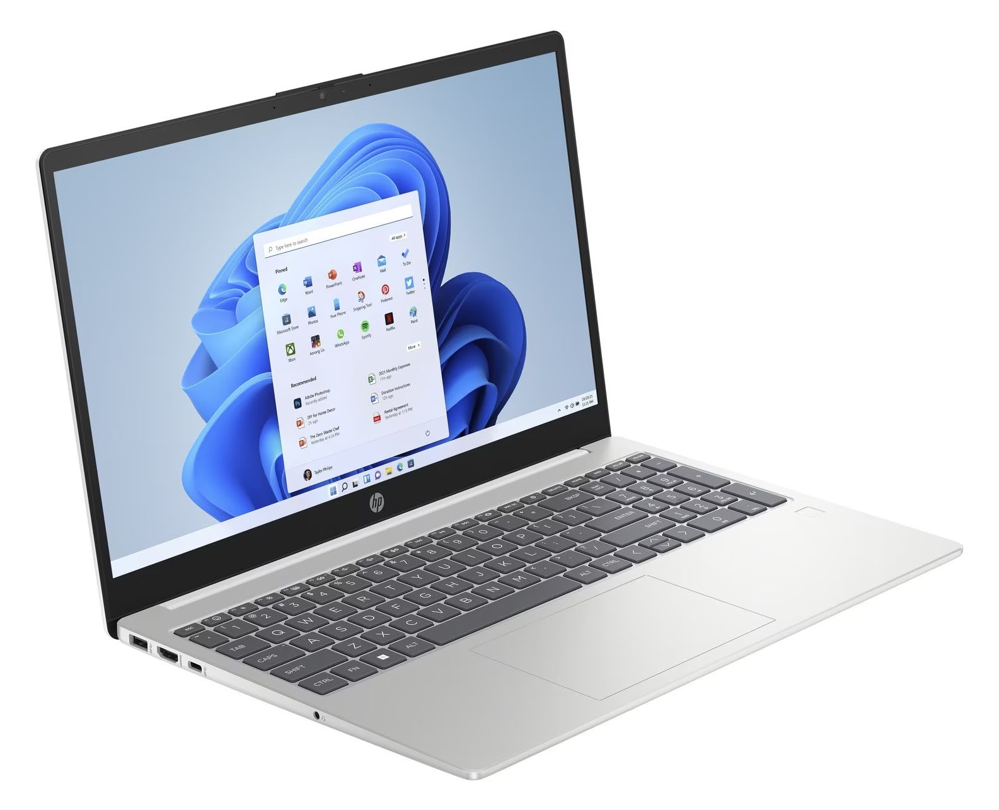
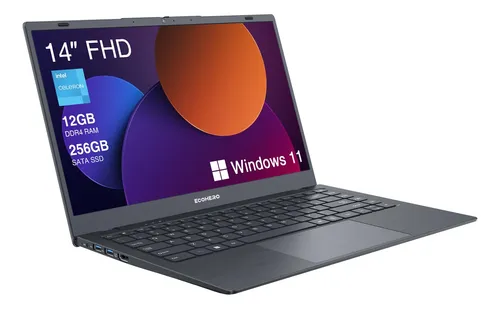

Choisir le meilleur ordinateur portable

Laptop Gamer Alpha
Idéal pour les jeux et le multitâche. Processeur puissant et carte graphique haut de gamme.

Laptop Étudiant Beta
Compact et léger, parfait pour les cours et le travail quotidien. Bonne autonomie de batterie.

Laptop Pro Gamma
Conçu pour les professionnels, avec un écran de haute qualité et des performances fiables pour le travail intensif.
Conseils pour bien choisir son laptop
- Vérifiez le processeur et la mémoire RAM selon vos besoins.
- Choisissez la taille et le poids en fonction de votre mobilité.
- Privilégiez une batterie longue durée si vous êtes souvent en déplacement.
- Ne négligez pas la qualité de l’écran et du clavier.
- Comparez les prix et les avis avant d’acheter.